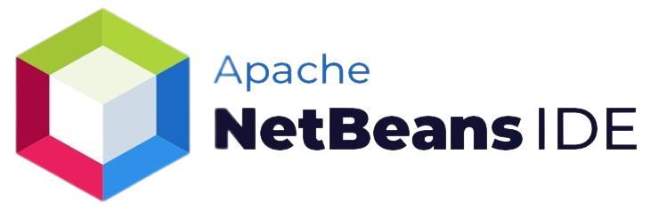

Linguagem de Programação:
Ao início do curso, vimos que o conceito da linguagem de programação, é um conjunto de regras sintáticas e semânticas que definem a estrutura de programas desenvolvidos em computadores; Uma linguagem formal que permite que os desenvolvedores construam instruções precisas para um computador executar determinadas tarefas. Essas linguagens são dividida em dois níveis: baixo e alto.
Baixo Nível: Linguagem mais próxima de máquinas, utilizando pulsos elétricos, para efetuar a comunicação entre os hardwares, como exemplo, os números binários, onde o "0” e "1” representam os pulsos.
Alto Nível: Está mais próxima da linguagem "humana”, a qual os desenvolvedores utilizam IDEs e Editores de Código-Fonte com linguagens intuitivas, para produzirem seus projetos.
O que é IDE ? ARRUMAR TEXTO !!!!!!!!!!!
IDE, é um "Ambiente de Desenvolvimento Integrado" (Integrated Development Environment), uma ferramenta para editar códigos, repleto de funcionalidades como, ferramentas de preenchimento de código, plugins, e muitos outros recursos para facilitar o processo de criação de softwares, aplicativos, jogos e projetos mais complexos.
O que é Editor de Código ?
Assim como um IDE, os Editores de Código possuem muitas características similares, porém, um pouco mais limitado, onde o programador muitas vezes utiliza estes editores para a criação de projetos mais simples, que não necessitem de aplicações mais complexas, e para desenvolver sites, como este que você está navegando para conhecer um pouco sobre nosso curso de ADS.
Abaixo, vou listar alguns IDEs e Editores de Código...
| IDE | Editores de Códigos |
|---|---|
 |
|
|  | |
 |
 |
Agora que vimos algumas IDEs e Editores de Texto, vou apresentar a você o Visual Studio Code, o primeiro Software que utilizamos em nosso curso para desenvolver os projetos iniciais.
O Visual Studio Code é um editor de código-fonte, executado em sua área de trabalho, com este Software podemos desenvolver sites e alguns aplicativos. Ele oferece suporte a extenções para facilitar ainda mais o seu trabalho.
Com ele, realizamos nossos primeiros projetos utilizando as linguagens de "html", "css", e "JavaScript"
- HTML
- CSS
- JavaScript
Conhecido como "Hypertext Markup Language" (linguagem de marcação de Hipertexto), o html é a linguagem utilizada para dar conteúdos aos sites utlizando suas < tags >, com ela, implementamos textos, imagens, vídeos, tabelas, e outros.
Conhecido como "Cascading Style Sheets" (Folhas de Estilo em Cascata), o css é uma linguagem de estilo usada para descrever a apresentação de um documento escrito em HTML ou em XML.
JavaScript é uma linguagem de programação interpretada e estruturada, de script em alto nível com tipagem dinâmica fraca. Juntamente com HTML e CSS, o JavaScript deixará sua página web mais dinâmica.
Pode ser usado também no back-end.
Oque são as Tags do Html ?
- Tags
As tags HTML são elementos usados para marcar e formatar os conteúdos: textual ou visual em documentos HTML. Cada tag HTML tem um nome e uma sintaxe que determina como ela deve ser aberta e fechada.
As tags são formadas por uma estrutura própria, iniciam com o sinal “menor que” ("<"), em seguida vem o nome do elemento e por fim, inserido a "/" junto ao sinal “maior que” (">"). Algumas tags fecham sozinhas (self-closing), não nescessitando da "barra" para fechar.
Alguns exemplos de tags são :
| Tag | Função |
|---|---|
<i> |
deixa o texto em itálico |
<strong> |
deixa o texto em negrito |
<sup> |
coloca um texto sobrescrito |
<mark> |
destaca um trecho de texto |
|